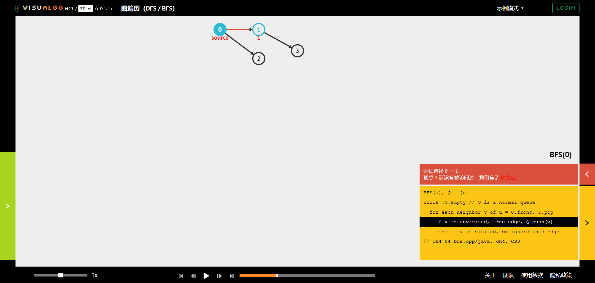
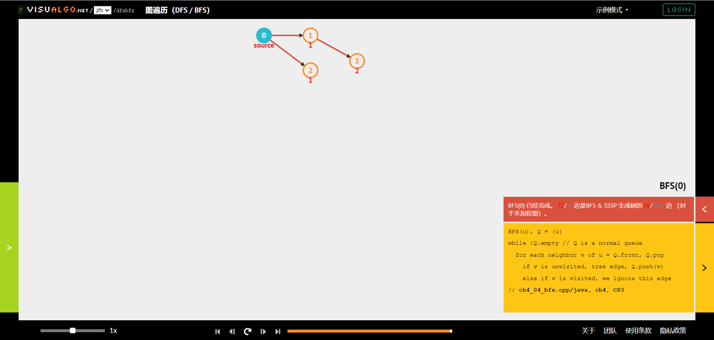

让我们试试不一样的交互方式
试试方向键
或者vim的hjkl
或者滑动屏幕(移动端)
基于Reveal.js框架的Web幻灯片交互方式
- 通过方向键或者
hjkl切换幻灯片 - 幻灯片维度更高，除了水平幻灯片还有竖直幻灯片
- 其他快捷键：
o或esc：总览b或者v：息屏、亮屏f：全屏（esc退出全屏）
发心
PowerPoint
可以从奥卡姆剃刀的角度考虑
能量点的功能非常丰富，但是功能多意味着学习成本大，但实际上我只需要很小部分的功能就能完成大部分的事情。
由于这种复杂性，我们在借鉴别人的PPT模板时也由于对PPT本身不熟悉而不能发挥模板的全部效果
基于Web的幻灯片
| 框架 | 说明 |
|---|---|
| Reveal.js | 功能多，难度大 |
| revael-md | Reveal.js的前端，定制主题困难 |
| Slidev | 完备的软件，不支持垂直幻灯片 |
| VSCode插件、Obsidian默认插件 | 功能少 |
并没有完全满足我的要求的框架
南京大学蒋炎岩老师幻灯片
蒋老师的幻灯片就很有意思，源码可以直接看，从代码上看大概也是使用了Reveal.js，但是自己定制了主题。
在得到蒋老师的同意后，我通过类比老师的HTML源码开发出了这个将Markdown扩展语法转换成蒋老师幻灯片风格的工具。
扩展语法的介绍
解析不是编译过程，
而且简单的split，
所以关键字不能用于正文
作者信息
我们观察蒋老师幻灯片的这部分
 文字和图片对应且都是外链，想通过Markdown扩展语法实现会破坏语法的简约，所以我选择在Markdown的开头设置文件信息。
文字和图片对应且都是外链，想通过Markdown扩展语法实现会破坏语法的简约，所以我选择在Markdown的开头设置文件信息。
- 使用标记
\n+++++\n和正文分割，其格式使用Json，
这个样例就是上图效果。
水平幻灯片和垂直幻灯片
您已经体验过水平和垂直的幻灯片
- 使用
\n---\n（三个减号的单独行）来划分水平幻灯片 - 使用
\n----\n（四个减号的单独行）来幻灯水平幻灯片
更多的减号就是Markdwon的分隔符
<hr>
<hr>在幻灯片中的渲染不是分隔符而是空行
渐变幻灯片
下面展示一下典型应用

每张渐变幻灯片的格式规则和普通幻灯片是一样的

- 使用关键字
\n++++\n来划分

这里展示了渐变幻灯片的典型应用：展示变化的过程

它不会像默认的主题那样使用切换的方式而突兀

上面展示的就是广度优先搜索的过程

这是最后倒数第七张

这是最后倒数第六张

这是最后倒数第五张

这是最后倒数第四张

这是最后倒数第三张

这是最后倒数第二张

这是最后一张
对Markdown原生语法的适配
文本格式
- 通过Markdown原生语法支持加粗和斜体
+ 通过Markdown原生语法支持**加粗**和*斜体*
- 通过插入HTML支持
删除线、高亮和标红
+ 通过插入HTML支持<del>删除线</del>、<mark>高亮</mark>和<red>标红</red>
- Markdown语法：
大于三个-的行
在Markdown这语法是分割线<hr>，但是和我定义的扩展语法冲突，所以这里是大于四个的-才是，另外对转换后的<hr>，作用是空行而不是分割线。
注释
这是注释
列表
- 这是无序列表
- 这是无序列表
- 这是无序列表
- 这是有序列表
- 这是有序列表
- 这是有序列表
- 这是嵌套列表
- 1
- 2
- 3
代码高亮
#include <iostream>
int main() {
std::cout << "Hello World!" << std::endl;
return 0;
}
Reveal-md和Slidev支持的代码特定行高亮暂时不支持
数学公式
$$\overbrace{1+2+\cdots+n}^{n个} \qquad \underbrace{a+b+\cdots+z}_{26}$$
$$\overbrace{1+2+\cdots+n}^{n个} \qquad \underbrace{a+b+\cdots+z}_{26}$$
$$\lim_{x \to \infty} x^2_{22} - \int_{1}^{5}x\mathrm{d}x + \sum_{n=1}^{20} n^{2} = \prod_{j=1}^{3} y_{j} + \lim_{x \to -2} \frac{x-2}{x}$$
$$\lim_{x \to \infty} x^2_{22} - \int_{1}^{5}x\mathrm{d}x + \sum_{n=1}^{20} n^{2} = \prod_{j=1}^{3} y_{j} + \lim_{x \to -2} \frac{x-2}{x}$$
引用：图片
支持Markdown原生图片引用语法：

建议使用插入HTML的方式
<img alt="图片失效显示的文字" src="图片的路径或者网址">
这里alt并不是必须的
图片格式
- 图片居中
<img alt=... class="center" src=...>
顺序不关键
- 右对齐
<img alt=... class="float-right" src=...>
Markdown是流的形式，即图片是占位的，但是这里右对齐的图片不占位
- 大小
<img ... src=... width="678px">
其他
- 关于自定义（需要前端知识）
自定义在本框架中是不推荐的，因为“像蒋炎岩”是项目的第一目的，其他的是次要，比如您需要自定义，要么您需要重构您的幻灯片，要么这个框架不适合您。
蒋老师的主题样式都在静态文件下jyy/jyy.css文件中，网页的主体都在.reveal .slides下，在这里修改即可全局修改（推荐只修改诸如字体、字间距、行间距这样的属性，zweix的前端也不好，不知道其他修改会发生什么）
谢谢
希望本工具能提高您的效率